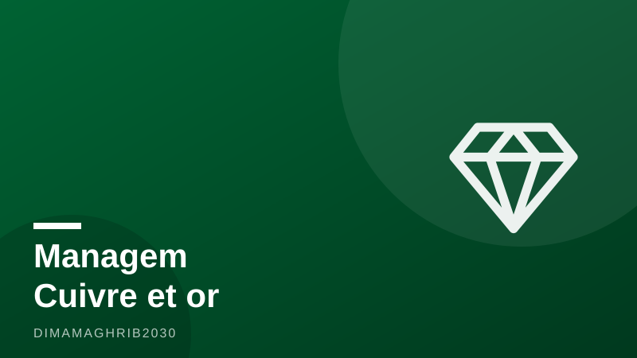

Cuivre et or : Managem triple son chiffre d'affaires et franchit les 10 milliards de dirhamsCopper and Gold Rush: Morocco's Managem Nearly Triples Revenue Past MAD 10 Billion

C'est le genre de semestre dont rêvent les investisseurs de la bourse de Casablanca. Managem, le champion minier marocain, vient de publier des résultats semestriels qui redessinent son profil : un chiffre d'affaires consolidé de 11,76 milliards de dirhams au premier semestre 2026, contre 4,42 milliards un an plus tôt, soit une envolée de 166%, selon Challenge.ma et Le Matin. Pour la première fois de son histoire, le groupe franchit la barre symbolique des 10 milliards de dirhams en six mois seulement.
Tizert et Boto, les deux moteurs de la transformation
Derrière ces résultats Managem 2026 spectaculaires, deux noms reviennent avec insistance : Tizert et Boto. La nouvelle mine de cuivre de Tizert, dans la région de Taroudant au Maroc, et la mine d'or de Boto, au Sénégal, ont toutes deux atteint leur régime de production nominale au cours du semestre, indique Boursenews. Combinée à des cours des métaux particulièrement élevés — le cuivre et l'or évoluant près de leurs sommets historiques —, cette montée en puissance a transformé la structure même des revenus du groupe.
Le signal était d'ailleurs visible dès le début de l'année : selon Médias24, le chiffre d'affaires du premier trimestre 2026 affichait déjà une progression de 147%. Le deuxième trimestre a confirmé, puis amplifié, la tendance. Dans le paysage des mines au Maroc, longtemps dominé par les métaux de base et l'argent, Managem s'impose désormais comme une véritable puissance du cuivre et de l'or, avec une empreinte qui s'étend du Souss marocain à l'Afrique de l'Ouest.
Un bilan qui respire enfin
L'autre bonne nouvelle de cette publication se lit au passif du bilan. L'endettement consolidé du groupe a été ramené à 9,96 milliards de dirhams, contre 12,67 milliards à fin 2025, soit une baisse de plus de 20%, rapporte Boursenews. Dans le même temps, les investissements ont reculé de 40% pour s'établir à 1,73 milliard de dirhams, la phase de construction des grands projets touchant à sa fin. En clair : les années de gros chantiers sont derrière, et les mines financées à crédit commencent à rembourser leurs promesses.
Cette combinaison — revenus en forte hausse, dette en repli, capex allégé — est précisément celle que guettent les analystes qui suivent le titre Managem à la bourse de Casablanca. Elle ouvre la voie à une génération de cash-flow nettement plus généreuse, et potentiellement à une politique de dividende plus musclée.
Un pari africain qui prend forme
Au-delà des chiffres, ce semestre valide une stratégie engagée de longue date : faire du groupe minier marocain un acteur panafricain du cuivre, métal clé de la transition énergétique, et de l'or, valeur refuge par excellence. Le cuivre marocain de Tizert arrive sur le marché au moment où la demande mondiale liée à l'électrification s'accélère, tandis que l'or de Boto au Sénégal profite d'un cours qui ne cesse de surprendre à la hausse.
Pour l'écosystème de l'investissement minier au Maroc, le message est clair : le pays ne se résume plus aux phosphates. Avec un premier semestre à près de 12 milliards de dirhams, Managem démontre qu'une entreprise marocaine peut jouer dans la cour des producteurs de métaux qui comptent sur le continent. Reste à confirmer au second semestre — mais rarement un groupe coté à Casablanca aura abordé la deuxième moitié d'année avec un tel vent dans le dos.
It is the kind of earnings report investors on the Casablanca stock exchange dream about. Managem, Morocco's mining champion, has just published first-half 2026 results that redraw its entire profile: consolidated revenue of MAD 11.76 billion, up from MAD 4.42 billion a year earlier — a 166% surge, according to Challenge.ma and Le Matin. For the first time in its history, the group has cleared the symbolic 10-billion-dirham mark in just six months.
Tizert and Boto: The Twin Engines
Behind the spectacular Managem 2026 results, two names keep coming up: Tizert and Boto. The new Tizert copper mine in Morocco's Taroudant region and the Boto gold mine in Senegal both reached nominal production during the half-year, according to Boursenews. Combined with exceptionally strong commodity prices — copper and gold both trading near historic highs — that ramp-up has transformed the very structure of the group's revenue base.
The signal was already flashing early in the year: according to Médias24, first-quarter 2026 revenue was up 147%. The second quarter confirmed and amplified the trend. In a Moroccan mining landscape long dominated by base metals and silver, Managem is now emerging as a genuine copper and gold powerhouse, with a footprint stretching from Morocco's Souss region deep into West Africa — a shift that is putting Morocco mining investment on more radar screens than ever.
A Balance Sheet That Can Finally Breathe
The other good news in this publication sits on the liabilities side. The group's consolidated debt has been cut to MAD 9.96 billion, down from MAD 12.67 billion at the end of 2025 — a reduction of more than 20%, Boursenews reports. At the same time, capital expenditure fell 40% to MAD 1.73 billion as construction on the flagship projects wrapped up. In plain terms: the years of heavy building are over, and the mines financed on credit are starting to deliver on their promises.
That combination — revenue soaring, debt shrinking, capex easing — is exactly what analysts tracking Managem stock on the Casablanca bourse watch for. It opens the door to significantly stronger cash-flow generation, and potentially to a more generous dividend policy down the line.
An African Bet Coming Good
Beyond the numbers, this half-year validates a strategy years in the making: turning the Moroccan miner into a pan-African player in copper, a critical metal of the energy transition, and in gold, the ultimate safe-haven asset. Copper from Morocco's Tizert mine is hitting the market just as global electrification demand accelerates, while gold from Boto in Senegal is riding a price that keeps surprising to the upside.
For Morocco's investment ecosystem, the message is unmistakable: the country's mining story is no longer just about phosphates. With nearly MAD 12 billion in first-half revenue, Managem is proving that a Moroccan company can compete among the metals producers that matter on the continent. The second half will need to confirm the momentum — but rarely has a Casablanca-listed group entered the back half of a year with this much wind in its sails.